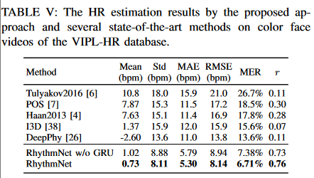
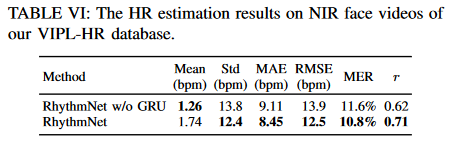
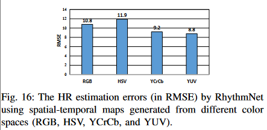
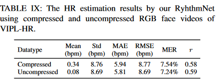
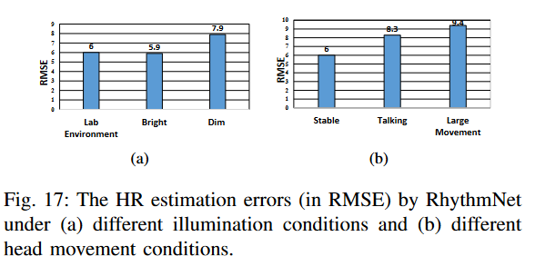
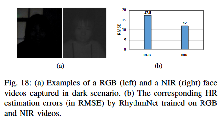

1. 引言
现有基于视频的HR估计方法分为两大类：1. 基于rPPG的方法；2. 基于心冲击信号（BCG）的方法。rPPG信号容易受到头部运动和环境条件（光照）的影响。
构建了一个包含107名受试者的2378人脸视频和752个近红外人脸视频的数据集VIPL-HR，由三种不同设备拍摄（RGB-D相机，智能手机和网络摄像头）9种不同情况下的视频，涵盖面部姿势和光照变化等。
主要贡献：
-
回顾远程HR估计工作，分析该问题仍面临的挑战；
-
考虑相邻HR测量之间的相关性，利用GRU进行建模，实现鲁棒的HR估计；
-
对多个数据集进行评估，实验结果超过SOTA.
2. VIPL-HR DATABASE
2.1 设备设置与数据收集
考虑不同光照条件，受试者姿态，不同摄像头的距离，不同拍摄设备
2.2 人脸视频压缩
MJPG压缩至2/3分辨率。
2.3 数据集统计信息
3. 方法
首先执行检测和面部标志检测来定位ROI，从中计算时空图来作为HR信号的low-level表示。最后设计了一个CNN-RNN模型来学习。
3.1 人脸检测、landmark检测和分割
SeetaFace检测人脸和定位81个标志点，以获得准确一致的ROI面部区域。
3.2 用时空图表示HR信号
通过landmark跨帧对齐人脸然后将其转换为YUV颜色空间，将人脸划分为n个ROI区域，计算每个区域每个颜色通道的均值$[Y_1,U_1,V_1,Y_2,U_2,V_2,\dots,Y_n,U_n,V_n]$，这样得到了$n*c$序列的空间图，然后得到$T\times n\times c$的时空图。
对每个时间信号应用最小-最大归一化，并将时间序列的值缩放为[0,255]。
颜色空间的选择对HR信号非常重要，经过测试选择YUV色彩空间。
考虑由于运动导致的部分帧数缺失的情况，沿时间维度随机屏蔽一小部分时空图来模拟确实数据的情况，并视作一种数据增强方式来增强RhythmNet的鲁棒性。
3.3 对HR信号的时序建模
对于每个人脸视频，使用包含w帧的固定滑动窗口(0.5s步长移动)将其分为单独视频片段$[v_1,v_2,\dots,v_t]$，使用ResNet-18作为backbone，L1损失衡量预测HR值与心率值的差异。
我们进一步考虑相邻视频段的关系，利用GRU进行时序关系建模。将CNN输出的特征输入到GRU，将GRU的输出输入到全连接层回归各个视频段的HR值，将每个视频段预测的HR值的均值作为最终的HR结果。
此外，由于同一视频的连续视频块心率变化不大，引入Smooth函数来约束单一视频块的预测值：
$$ \mathcal{L}_{\text{smooth}}=\frac{1}{T}\sum_{i}^{T}{|hr_t-hr_{mean}|} $$
总损失函数($\lambda=100$)为：
$$ \mathcal{L}=\mathcal{L_{l1}}+\lambda\mathcal{L}_{\text{smooth}} $$
4. 实验
4.1 数据集与实验设定
选取300帧来计算时空图，5*5的ROI区域。用6个连续的hr值计算$L_\text{smooth}$。
4.2 数据集内测试
-
RGB视频上的测试：
 -
近红外视频上的测试

4.3 跨数据集测试
在VIPL-HR数据集上训练，在MAHNOB-HCI和MMSE-HR数据集上训练。
4.4 关键模块分析
-
时空图
-
颜色空间选择
 -
时序建模
见RGB视频测试部分。
4.5 鲁棒性分析
-
视频压缩
 -
光照变化
昏暗环境下误差变大，且暗光条件下，在NIR视频上训练的模型误差更小。
-
头部运动
